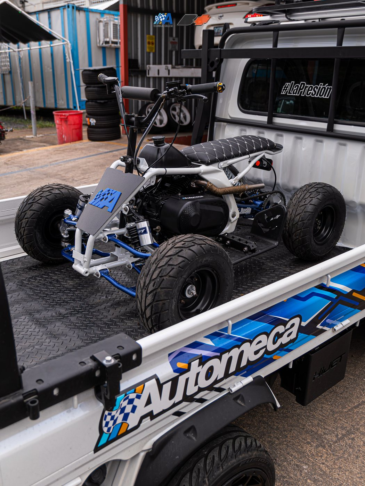
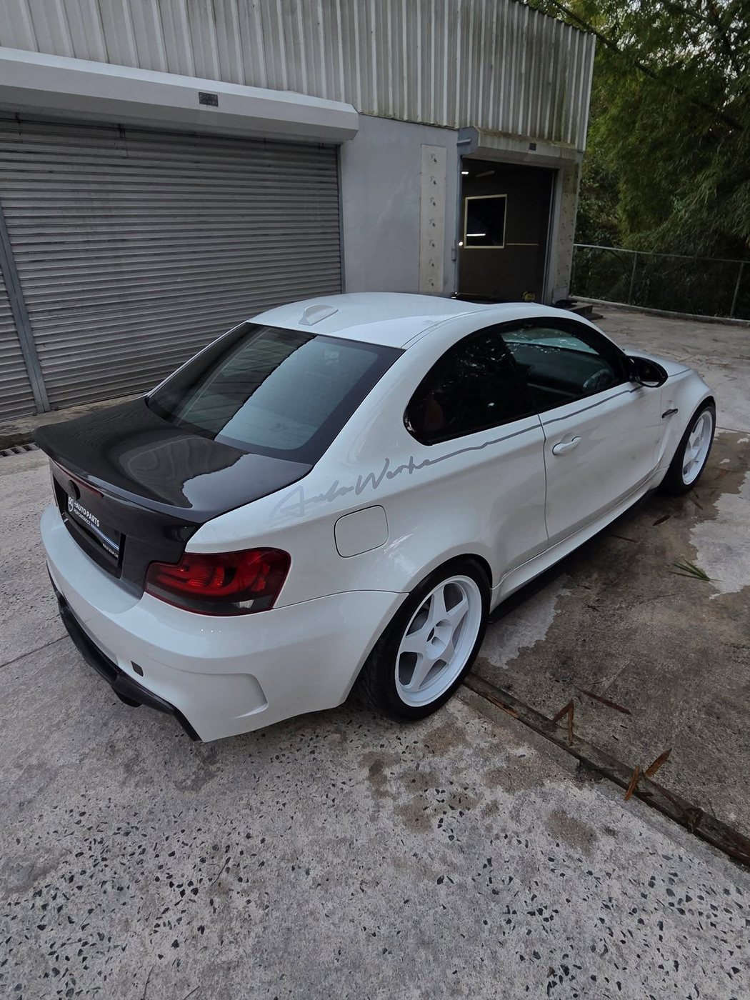
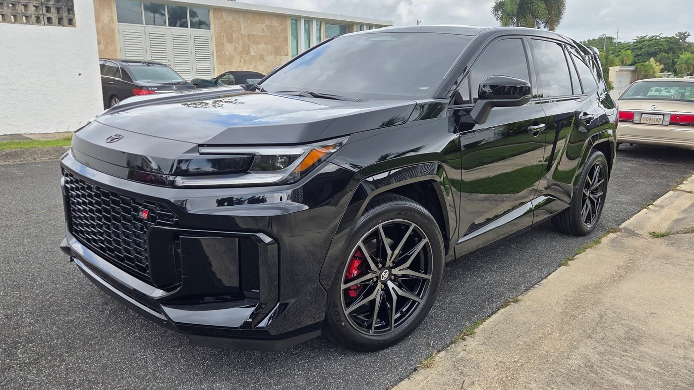
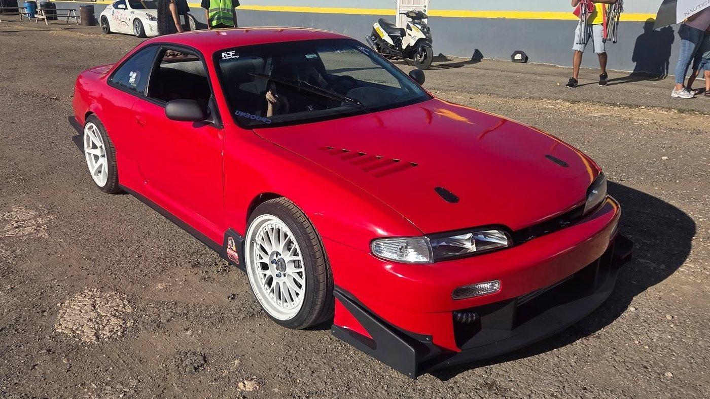
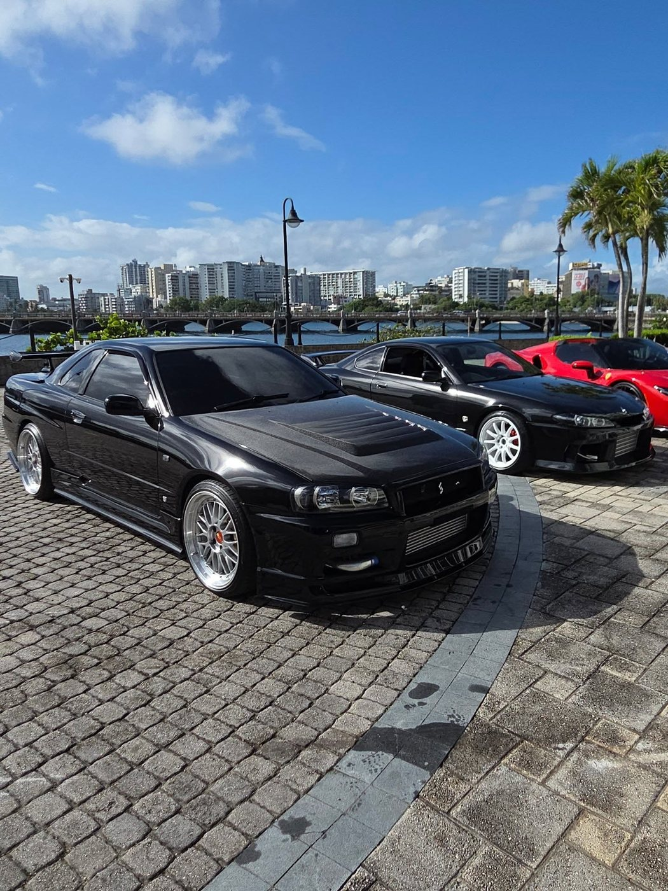
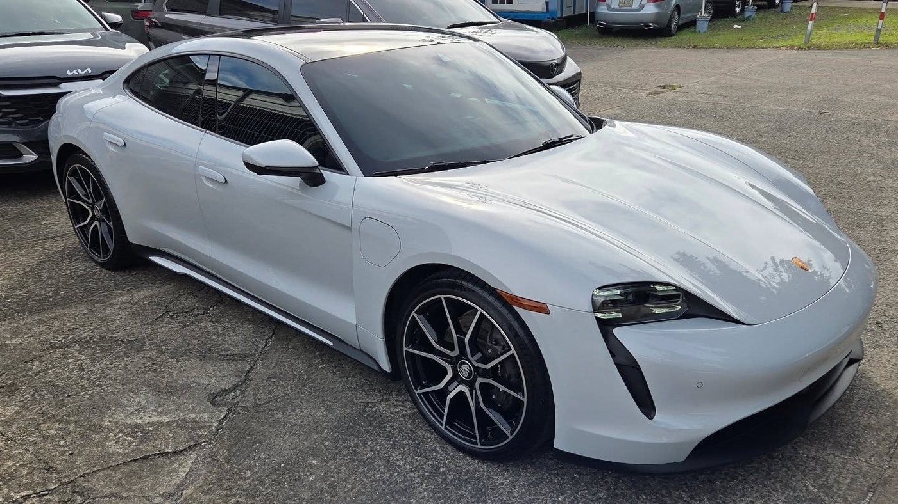
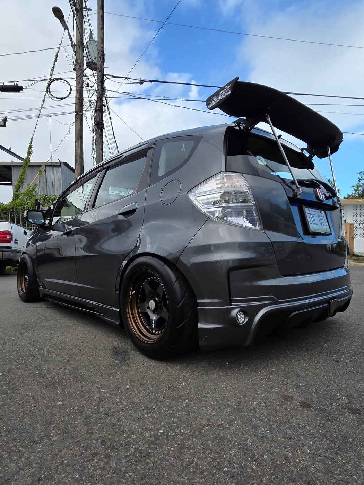
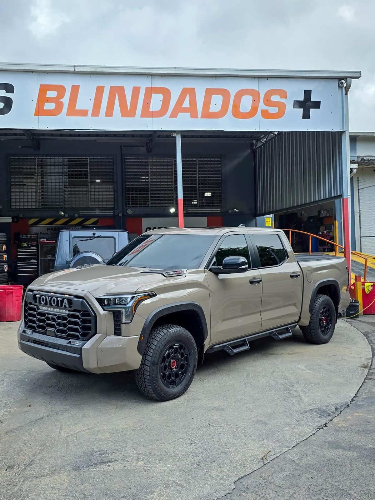
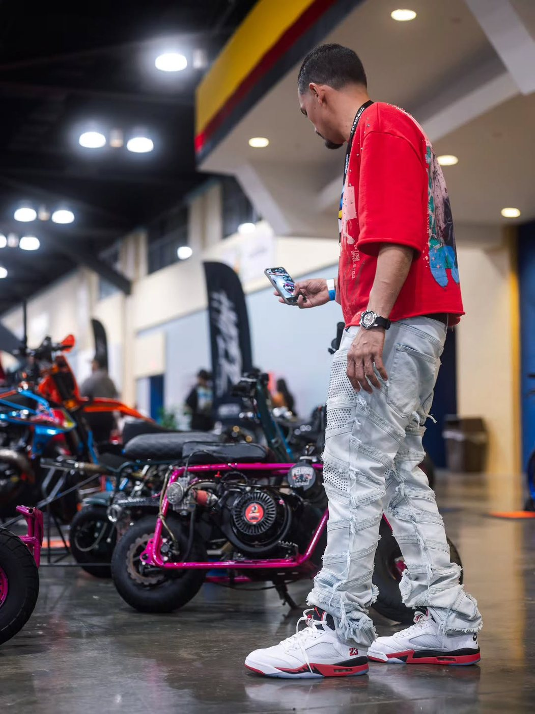
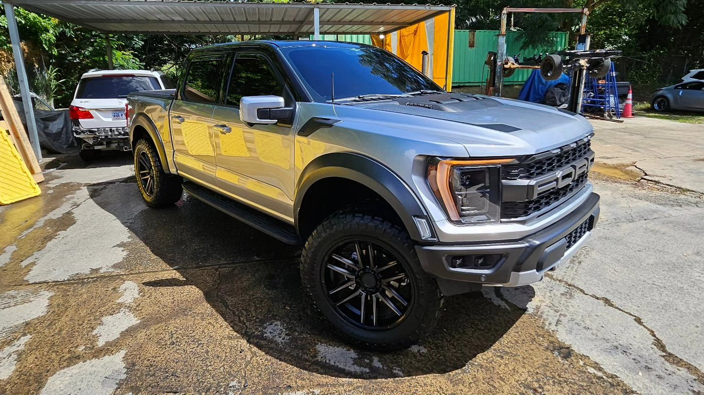

Calle Acacia, San Juan · Desde 2011
Wraps 3M, tintes cerámicos, coatings y corrección de pintura. El taller que la escena tuner de PR conoce desde 2011.
Resultados reales
Diez trabajos reales del taller. Toca una foto para verla completa.










← Desliza o usa las flechas →
El taller
Cambio de color y acabados con vinilo 3M. Tu carro, otro carro.
Tinte con tecnología cerámica: menos calor, más privacidad, visibilidad clara.
Recubrimiento cerámico que protege la pintura y la deja con brillo profundo.
Pulido que elimina swirls y rayazos finos. Acabado espejo de verdad.
Lavado con técnica de detailing: cada panel, cada aro, cada detalle.
Mándanos fotos de tu vehículo por WhatsApp.
Te recomendamos el servicio ideal y separamos tu cita.
Recoges tu carro transformado. Sin atajos.
Mira más en @aredamcustomdetailing
Preguntas frecuentes
Un wrap es una película de vinilo de alta calidad (trabajamos 3M) que cambia el color o acabado de tu vehículo sin repintarlo. La duración depende del material, el uso y el cuidado. Escríbenos por WhatsApp y te cotizamos según tu caso.
Son tintes con tecnología cerámica que bloquean el calor y los rayos UV sin perder visibilidad. Tenemos varios niveles de tinte; te recomendamos el ideal para tu vehículo por WhatsApp.
Es un recubrimiento que protege la pintura, le da un brillo profundo y repelencia al agua, y facilita el mantenimiento del vehículo.
Pulido profesional para eliminar swirls, rayazos finos y marcas de lavado, devolviéndole profundidad y claridad a la pintura.
Sí, trabajamos de la mano con Blindados PR en blindaje vehicular.
Estamos en la Calle Acacia, San Juan, Puerto Rico. Operando desde 2011.
Todo se coordina por WhatsApp al 787-636-7668. Escríbenos y te cotizamos.
Agenda tu cita
Teléfono / WhatsApp
787-636-7668Ubicación
Calle Acacia, San Juan, PR
Llena esto y te abrimos WhatsApp con tu mensaje listo.
Oferta por tiempo limitado
Solo Web
$300
$99
Tranquilidad Total
$1,000
$200
Un año de tranquilidad.
La quiero para mi negocio